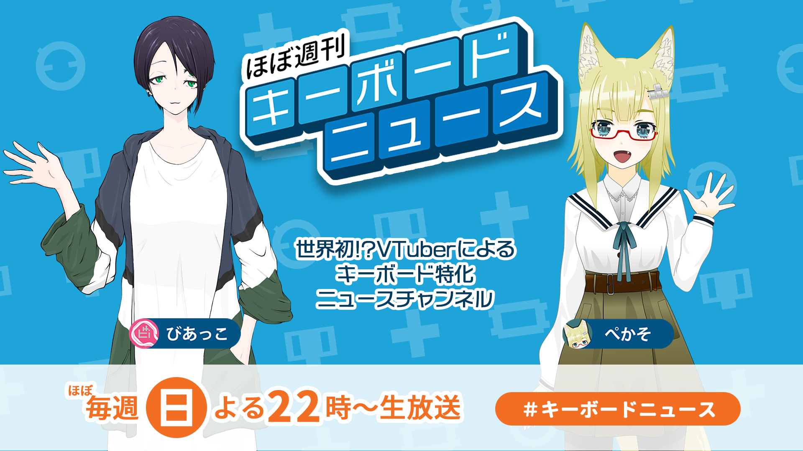

世界初!? VTuberによるキーボード専門ニュースチャンネル
キーボードニュースをお届けする二人のプロフィール
ケモミミ17歳女子高生。耳と尻尾はあるがヒトの耳は無い。だけど黒板の文字は見えないのでメガネをつけている。重くて（物理的に）強そうなキーボードが好き。身長は耳の先含めて150cm。
20 代後半の院生のようだが、会社にばかり行っていて研究をしている気配がない。小さいキーボードが好きだけれど実用主義と心配性が祟ってなかなか 50 % 以下のキーボードを作れずにいる。身長 170 cm。
ほぼ週刊キーボードニュースの雰囲気がわかる動画をほんの少しご紹介します。
キーボードニュースの紹介動画はこちら
ゲーム実況などの雑談配信も
メインコンテンツ「ほぼ週刊キーボードニュース」はほぼ毎週配信中
自作キーボード入門解説講座もあります
ご意見、ご感想、お便り投稿などお待ちしています！